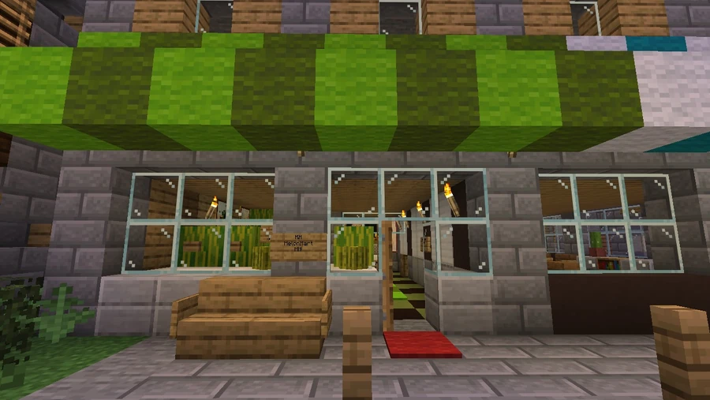

Melonport
A port-related landmark documented by the community, offering an entry point into the history of Broville’s shipments.
Melons and port relations
Community tradition describes relations with the city of Melonport as essential to Broville because of the importance of melons. Admiration for the commodity is associated with ancient peoples, with remains particularly visible at the port of the ruined castle northwest of Broville. These references do not provide a complete economic chronology of shipments.



References and jokes around the city
Fondness for melons coexists with jokes openly mocking them. Recorded examples include:
- The Melon Harbor Never Forget project, whose record also uses the spelling “Melon Habor”.
- Melon Harbor, at −534, 93, 2113.
- MM Melon Mart MM, at −254, 77, 1815. These names connect the port tradition with products and humorous references distributed around the map.
See also
Sources and references
- v11.4.4 maps, signs, books and items World records
- Melonport · Broville Wiki Community archive
Text adapted and expanded from Melonport (contributors and history, revision 5104). Adapted text is available under CC BY-SA 3.0.